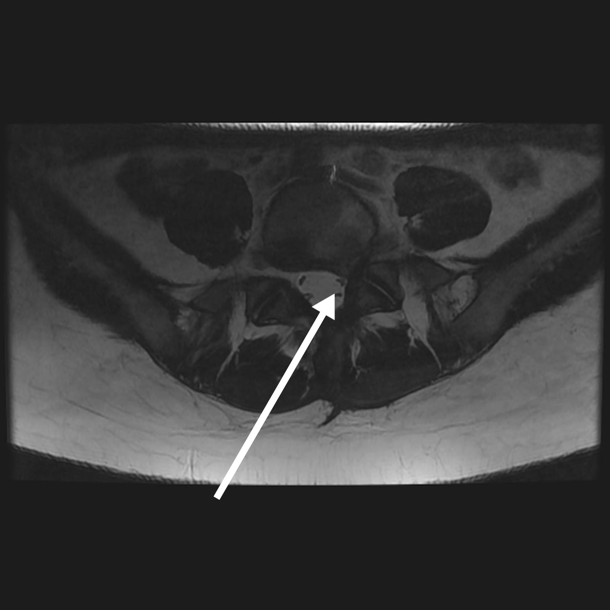

Hernie Discale
Une hernie discale se définie comme l’apparition d’une masse discale protrusive, sortie de son espace discale habituel, postérieure ou postéro-latérale.

Exemple : Hernie discale L5S1 gauche
- Hernie discale médiane: Douleurs lombaires en barre
- Hernie discale médio-latérale: Douleurs lombaires et radiculaires
- Hernie discale latérale: Douleurs radiculaires
- Hernie discale compliquée: hyperalgie et/ou déficit radiculaire
Une hernie discale est diagnostiquée par:
une IRM lombaire
un scanner lombaire
une radiculographie
L’imagerie lombaire est a réalisée en cas de douleurs persistantes, résistantes au premier traitement médical associant repos, ceinture lombaire (en cas de lombalgies aiguës isolées) et traitement médicamenteux.
Traitements Médicaux
- Mise au repos du rachis: arrêt des activités physiques domestiques, sportives et professionnelles, arrêt de travail souvent nécessaire.
- Contention lombaire souhaitable en cas de lombalgie aigue pure sur hernie discale médiane (pas de douleurs radiculaire)
- Traitements antalgiques médicamenteux:
- pallier I : paracétamol
- pallier II : AINS, cortisone, tramadol
- pallier III : morphinique
- Traitement par infiltration
- infiltration des articulaires postérieures
- infiltration épidurale ou foraminale
- infiltration type Lucherrini
Résultats & facteurs pronostiques évolutifs
- La majorité des cas guérissent en quelques jours (moins de 15 jours)
- En cas d’échec: réalisation d’une imagerie, majoration du traitement médical et avis neurochirurgical.
Traitements Chirurgicaux
- Traitement par rhizolyse: thermocoagulation des rameaux nerveux des articulations postérieures
- Traitement par nucléorthése, chimionucléolyse ou nucléolyse au laser percutanée, endoscopie laser.
- Traitement chirurgical: abord micro-chirurgical ou endoscopique
Facteurs pronostiques évolutifs
Résultats
Le plus souvent guérison spontanée ou après un traitement médical.
Récidive douloureuse toujours possible.
Facteurs pronostiques évolutifs
Positifs
- Poids normal
- Patient sportif
- Hauteur discale conservée
- Pas d’antécédent chirurgical rachidien
- Pas d’anomalie discale ou rachidienne surajoutée:
- atteinte discale multiple
- canal lombaire
- spondylolisthésis, etc.
Négatifs
- Surcharge pondérale
- Sédentarité (patient non sportif)
- Tabagisme
- Pathologies associées:
- insuffisance cardiaque
- diabète, etc.
- Antécédents chirurgie rachidienne
- Malformations rachidiennes associées:
- spondylolisthésis
- CLE
- scoliose, etc.